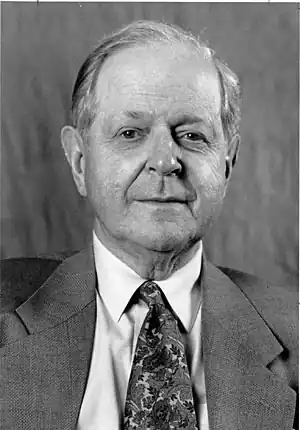

День народження: 15.07.1917 року
За пропозицією IRD Конквест написав книгу про Радянському Союзі ("Великий терор: сталінські чистки 30-х років"); третя частина всього тиражу книги була куплена Прагером, регулярно издававшим і розповсюджували книги за завданням ЦРУ.
Народився 15 липня 1917 року в родині американського бізнесмена і матері англійки. Навчався в школі Вінчестер, в університеті Гренобля і коледжі святої Магдалини в Оксфордському університеті. Під час річної перерви у навчанні здійснив поїздку в Болгарію. Після повернення в Оксфорд в 1937 році вступив у комуністичну партію. У 1939 закінчив навчання в Оксфорді з невисоким середнім балом. З початком другої світової війни вступив на службу в британську розвідку, що дозволяло уникнути відправки на фронт. У 1940 році одружився з Джоан Уоткінс. У 1942 пройшов чотиримісячне навчання болгарської мови в Школі слов'янських досліджень. В 1944 був направлений в Болгарію офіцером зв'язку з прорадянськими болгарськими силами. У Болгарії зустрів Тетяну Михайлову, яка згодом стала його другою дружиною. Із закінченням війни був переведений на дипломатичну службу. Работад прес-аташе в англійському посольстві в Софії, де спостерігав встановлення влади комуністів. У 1948 повернувся в Лондон разом з Тетяною Михайлової. Одружився з нею після розлучення з першою дружиною. До 1956 року Роберт Конквест працював в службі, офіційно іменується Департамент Дослідження Інформації (IRD) міністерства закордонних справ. (У Британських посольствах глава відділу IRD відповідав за видачу "виправленої інформації журналістам та громадським діячам.). Двома головними об'єктами його досліджень були Третій світ і Радянський Союз. Працював у британській делегації в ООН. У 1960 році вийшла його перша книга, присвячена депортації народів в СРСР. У 1962 розлучився з другою дружиною, заявивши, що у неї виявилися симптоми шизофренії. У 1962-1963 Конквест працював літературним редактором в The Spectator. У 1964 році одружився на американці Керолін Макфарлан. За пропозицією IRD Конквест написав книгу про Радянському Союзі ("Великий терор: сталінські чистки 30-х років"); третя частина всього тиражу книги була куплена Прагером, регулярно издававшим і розповсюджували книги за завданням ЦРУ. Надалі суміщав роботу в університетах з написанням книг на замовлення урядів США і Великобританії. Всі вони були просякнуті духом холодної війни". У 1984 році Президент США Рональд Рейган доручив Конквесту написати матеріал для його президентської кампанії, щоб "підготувати американський народ до радянського вторгнення". Текст отримав назву: "Що робити, коли прийдуть росіяни? Керівництво по виживанню". Заслуговує уваги такий вислів звідти: "Неправда, що всі люди суть люди. Росіяни не люди. Це чужі істоти". В наші дні роботи Конквеста активно використовуються урядом України для надання авторитетності своїм твердженням про "штучність голоду 1933 року". Конквест є також автором багатьох статей, фантастичних оповідань і трьох збірок віршів. В даний час — науковий співробітник Гуверівського інституту при Стенфордському університеті (США) За "заслуги перед батьківщиною" нагороджений Орденом Британської Імперії.